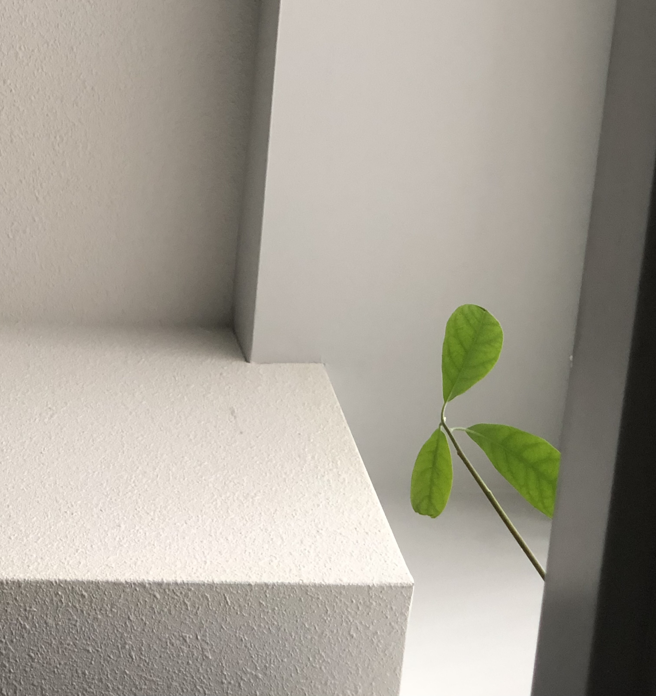

Green leadership
Working a green job has shaped my leadership development in environmental sustainability by deepening my understanding of how small, consistent actions can have a lasting impact on the environment. It has also broadened my intercultural development, as I’ve become more aware of the interconnectedness of communities—whether through supporting food banks, collaborating with the Kamloops Wild life park, or ensuring that our local efforts contribute to global sustainability. These actions have helped me cultivate a leadership mindset rooted in responsibility and the recognition that environmental sustainability is a shared value, no matter where we are or who we work with.
